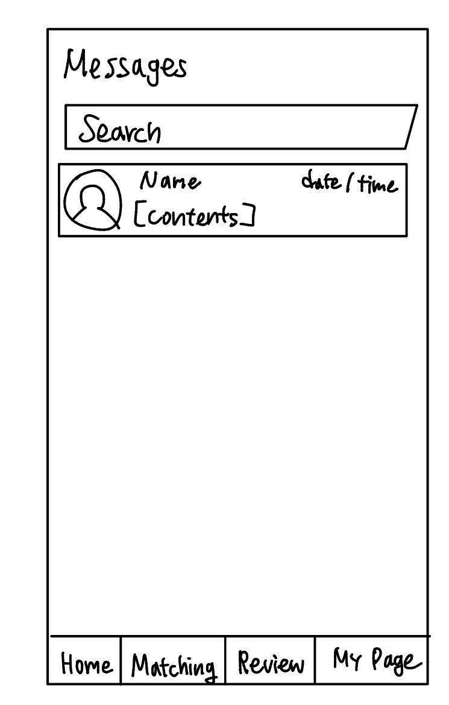
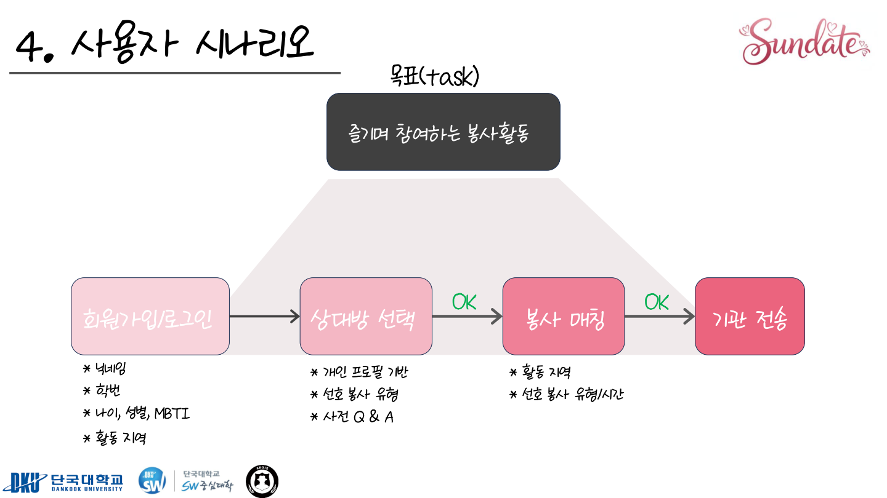
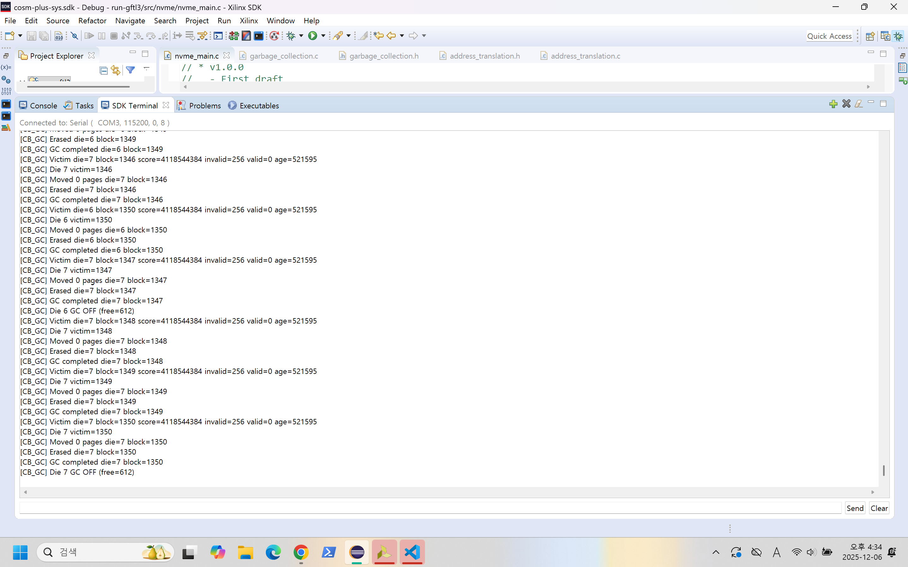
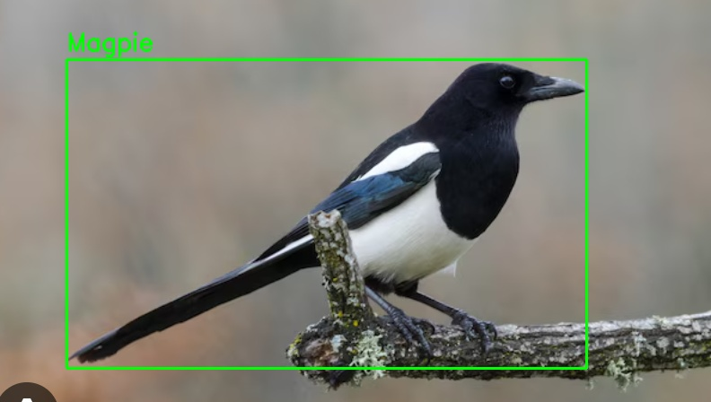

서비스 개발
학생용 화면과 관리자 기능, 서버 API 구현
사용자와 운영자의 요구를 정리하고,
AI를 활용한 화면·서버 구현부터 배포와 운영 후 개선까지 이어갑니다.
프로젝트에서 활용한 기술과 경험
학생용 화면과 관리자 기능, 서버 API 구현
AI를 활용한 개발과 의료 응답·에이전트 실험
클라우드 서비스 운영과 로컬 관측성 MVP 검증
스토리지 정책별 성능 비교·분석
서비스를 완성한 경험과 근거를 바탕으로 판단한 경험.
단짠과 의료 AI 해커톤을 대표 사례로 소개합니다.
9개의 프로젝트


축제 홈 · 부스맵 · 예매 화면
학생의 축제 예매와 운영진의 현장 입장을 연결한 대학 축제 웹앱입니다.

구현안 비교와 공동 개선 과정
루닛 L2-preview 기반 의료 응답의 품질을 비교하고, 응답 규칙을 공동 개선한 해커톤 프로젝트입니다.

관측성 아키텍처
로컬 Kubernetes(kind)에서 LLM/RAG 요청의 지표·trace·알림을 연결한 관측성 MVP입니다.

손그림 UI 입력 예시
손그림 UI와 기능·텍스트 입력으로 요구사항 명세와 화면 흐름을 생성하는 에이전트입니다.

사용자 흐름도
봉사와 만남을 연결하는 아이디어를 교내 대상으로 구현·시연한 프로토타입입니다.

Xilinx SDK 실험 화면
Xilinx·Cosmos+ 보드에서 GC 정책별 성능을 비교한 FTL 실험 프로젝트입니다.

고객 특성 상관관계 분석
고객 데이터로 지원 필요 수준을 분류하고 모델 성능을 비교한 프로젝트입니다.

조류 탐지 결과
조류 탐지와 퇴치음 재생을 연결한 해커톤 프로토타입입니다.

논문 실험 그래프
Leveled·Universal·FIFO Compaction의 성능을 같은 조건에서 측정·분석한 연구입니다.
스토리지 성능 분석과 텍스트 임베딩 연구,
그리고 운영체제 교재 기반 RAG 저서.
| 측정 항목 | Leveled | Universal | FIFO |
|---|---|---|---|
| 쓰기 작업 시간 | 1,608.1초 | 1,091초 | 533.7초 |
| 쓰기 증폭 (WAF) | 4.50 | 3.43 | 1.56 |
| 읽기 처리율 | 약 8.41만 ops/s | 약 6.47만 ops/s | 약 260만 ops/s |
| 실제 조회 성공 횟수 | 7,134,622회 | 7,005,533회 | 5,797회 |
해커톤에서의 실행과 연구의 성과.
의료 특화 모델의 건강 상담 응답 규칙과 HealthBench 평가 하네스 개선.
주최: 루닛 (후원: 과학기술정보통신부 · NIPA)
봉사와 만남을 연결한 아이디어를 교내 대상 프로토타입으로 구현·시연했습니다.
주최: 단국대학교 SW중심사업단
OSTEP 교재의 키워드별 벡터 분포를 시각화하고 운영체제 개념과 연결해 해석했습니다.
주최: 한국정보과학회 정보보안 및 고신뢰컴퓨팅연구회
유해조류 탐지와 퇴치음 재생을 연결한 프로토타입을 제작·시연했습니다.
주최: 경희대학교 AI·SW 교육단 · 소프트웨어융합대학
현장의 반복 업무 개선부터 연구·정보 전달까지,
개발 밖에서 문제를 보고 실행한 경험입니다.
반복 안내 업무를 작은 실험으로 개선
학생이 찾아볼 정보를 기획하고 행사 운영을 지원
RAG와 저장장치 공동연구
RocksDB 성능 비교와 KCC 2025 논문 발표
자격증
한국산업인력공단 ·
어학
영어 · 응시일 ·
단국대학교 소프트웨어학과 4학년